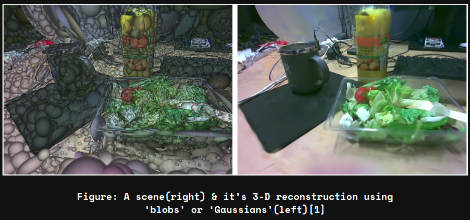
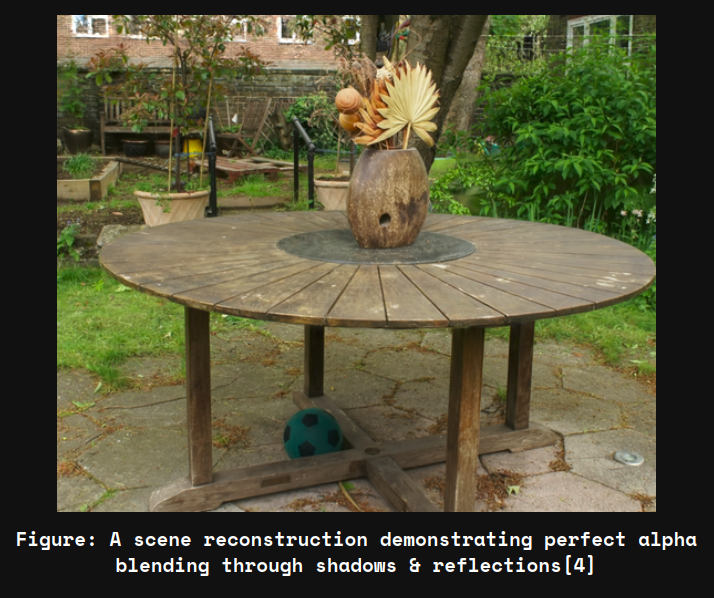
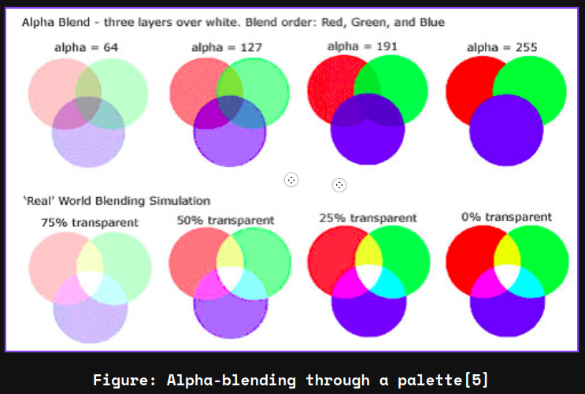

Imagine you’re at a friend's birthday. Now consider any moment of the party as a scene in a 3D space where every element has its own story. You can visualize this because for you this inofrmation is intuitive, you live in a 3-D space. But for a computer, such is not the case, it cannot process or understand a 3-D scene without certain programmed mathematical functions. Enter Gaussian Splatting. Gaussian splatting is one of those clever techniques that turns mathematical descriptions into visual information. Instead of just placing plain dots or pixels, we use little “blobs” or "Gaussians" defined by a handful of parameters to build up a scene. Each of these blobs comes with its own position, shape, color, and even a measure of transparency.

Areas of exploration such a these are an overlapping area for fields of Computer Vision(understandng data from a scene) & Graphics(recreating a scene based on understanding from available information and data). From this blog onwards, we will explore Gaussian Splatting in detail in a series of blogs. With today's blog being focussed on giving a basic understanding of the parameters and how they affect the results.
Let’s start with position. Think of it as the address of each splat in our 3D world, defined by the familiar X, Y, and Z coordinates. Just like you’d pinpoint a location on a map using latitude, longitude, and elevation, each splat’s position ensures it appears in the right spot relative to everything else. When you’re building a virtual sculpture, getting the position right is the first step to ensuring everything fits together.
These positions are often represented in a coordinate system that may undergo various transformations. In many graphics pipelines, we use homogeneous coordinates—by appending an extra dimension—to seamlessly incorporate translations along with rotations and scaling through matrix multiplication. Such conversions are critical when you’re rendering a scene where camera angles and object placements need to be dynamically adjusted.
When the splats are projected onto a 2D screen, the underlying algorithms must account for perspective distortions, meaning that objects further away appear smaller. This perspective projection involves dividing the X and Y coordinates by the Z coordinate (or a function of it), ensuring that the scene looks natural to our eyes. In practice, setting up and transforming positions correctly can be the difference between a lifelike scene and one that feels off-kilter.
Now, consider the shape of these blobs, controlled by a covariance matrix, a 3x3 grid of numbers that tells us how the splat is stretched, rotated, or scaled in 3D space. Imagine you have a lump of clay; if you squeeze it, it might become elongated in one direction, forming an ellipse rather than a perfect circle[2]. That’s essentially what the covariance does: it defines the splat’s “footprint.” If the matrix values are all equal, you end up with a nice, round blob. If they differ, the splat takes on a more interesting, stretched shape. Different scenes have a different number and type giving your scene a richer, more dynamic look.
Furthermore, it helps in computing how the splat contributes to the pixel intensity on the screen by effectively “weighing” distances from the splat center according to its shape. This is essential in evaluating the Gaussian function for each pixel, ensuring that the fall-off in brightness or density is computed correctly, thereby influencing the final visual output with subtle variations in shape and size[3].
We wil further study more about these covariance matrices and their working in the upcoming blogs
Next, we have color. In our digital world, color is everything, and each splat comes with its own RGB values that determine its hue. Picture mixing paints on an artist’s palette: a dash of red here, a hint of blue there, and suddenly a unique color is born. In Gaussian splatting, these RGB values allow each blob to contribute to the overall color composition of the scene. Think about a sunset, where subtle variations in color blend to create a beautiful gradient across the sky—each splat is like a tiny brushstroke contributing to that larger picture.
Technically, these RGB values are typically normalized (often in the 0 to 1 range) or specified in the 0 to 255 range, depending on the system. When multiple splats overlap, their colors blend according to specific algorithms, sometimes using weighted averages based on their alpha values. This blending is crucial for achieving a smooth, continuous appearance rather than a patchwork like appearance of colors.
Moreover, in more advanced implementations, these RGB values can be enhanced with lighting models, where each splat's color is affected by virtual light sources in the scene. This might involve adjusting the color based on the angle of incidence, reflectance properties, or even shadowing effects, which brings an extra layer of realism. These technical details might seem intricate at first, but they are what allow computer graphics to achieve that lifelike touch we often take for granted.

Transparency, or alpha, is the final parameter that ties everything together. Imagine working with watercolor paints, where the artist decides how much water to mix with paint, affecting how see-through each wash of color is. The alpha value does just that for our splats. A higher alpha makes a splat appear more solid and opaque, while a lower alpha gives it a softer, more see-through kinda quality. This control over transparency means that when splats overlap, they blend in ways that can simulate soft shadows, glowing light, or delicate textures.
Additionally, managing transparency in a scene with many overlapping elements can be quite challenging. Techniques such as order-independent transparency (OIT) have been developed to address issues that arise when the compositing order isn’t easily determined. Such methods ensure that even in complex scenes, the interplay between opaque and semi-transparent splats is calculated correctly, maintaining the visual info of the final image. This careful handling of alpha values ultimately contributes to a more polished and realistic rendering.

When these parameters—position, covariance, color, and alpha—work together, they allow for the creation of images that feel natural and fluid. Each splat is not just a dot; it’s a miniaturized, adjustable element of a larger visual narrative. Now that we have covered the basic parameters we will now be understanding how Gaussian splatting actaully works, we'll also be looking at some very interesting frameworks that are used when we work with these technlogies. This was the first blog in a series of blogs that will be focussed on Gaussian Splatting. Stay tuned for more such interesting blogs.
Citations:
[1] Image Source: https://openaccess.thecvf.com/content/CVPR2024/papers/Matsuki_Gaussian_Splatting_SLAM_CVPR_2024_paper.pdf
[2] https://www.visiondummy.com/2014/04/geometric-interpretation-covariance-matrix/
[3] https://medium.com/@thibaut.chauffier/exploring-3d-gaussian-splatting-e50b8c9cee93
[4] Image Source: https://repo-sam.inria.fr/fungraph/3d-gaussian-splatting/
[5] Image Source: https://stackoverflow.com/questions/17418048/html5-canvas-creative-alpha-blending